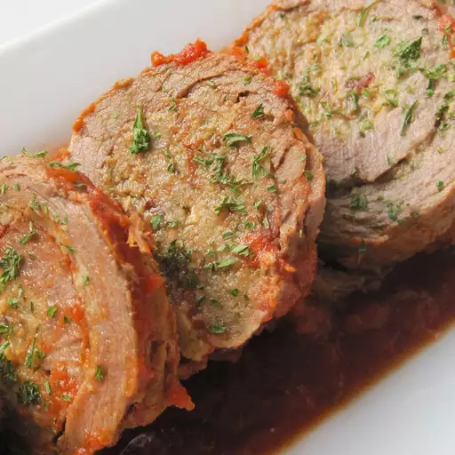

Bob's Slow Cooker Braciole
A delicious but cheap and easy slow cooker version of the classic Italian dish, braciole, using flank steak and jarred marinara sauce.

Ingredients
- 2 (26 ounce) jars marinara sauce
- 2 eggs, beaten
- ½ cup dry bread crumbs
- 1 (1 1/2-pound) flank steak, pounded to 1/4 inch
- 1 teaspoon kosher salt
- Ground black pepper
- 5 slices of bacon
- 1 cup shredded Italian cheese blend
- 2 tablespoons vegetable oil
Steps
- Pour marinara sauce into the slow cooker and set on High to warm.
- Combine eggs and bread crumbs in a small bowl. Sprinkle both sides of the flank steak with salt and pepper.
- Pat bread crumb mixture over one side of flank steak, leaving a 1-inch border around the edges. Top bread crumbs with bacon slices and sprinkle with shredded cheese.
- Starting from one long side, tightly roll flank steak into a log. Use string or toothpicks to secure the log in 4 or 5 places.
- Heat oil in a heavy skillet. Sear prepared flank steak log in hot oil until well browned on all sides, about 10 minutes; transfer to warm sauce in the slow cooker and spoon sauce over steak log to cover.
- Turn slow cooker to Low; cook steak log until very tender, 6 to 8 hours. Remove string/toothpicks before slicing. Serve with marinara sauce.
Go Home